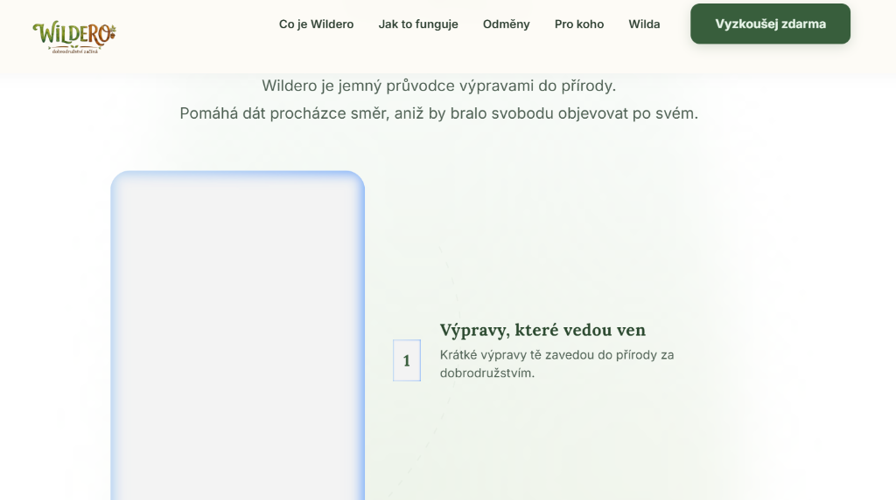
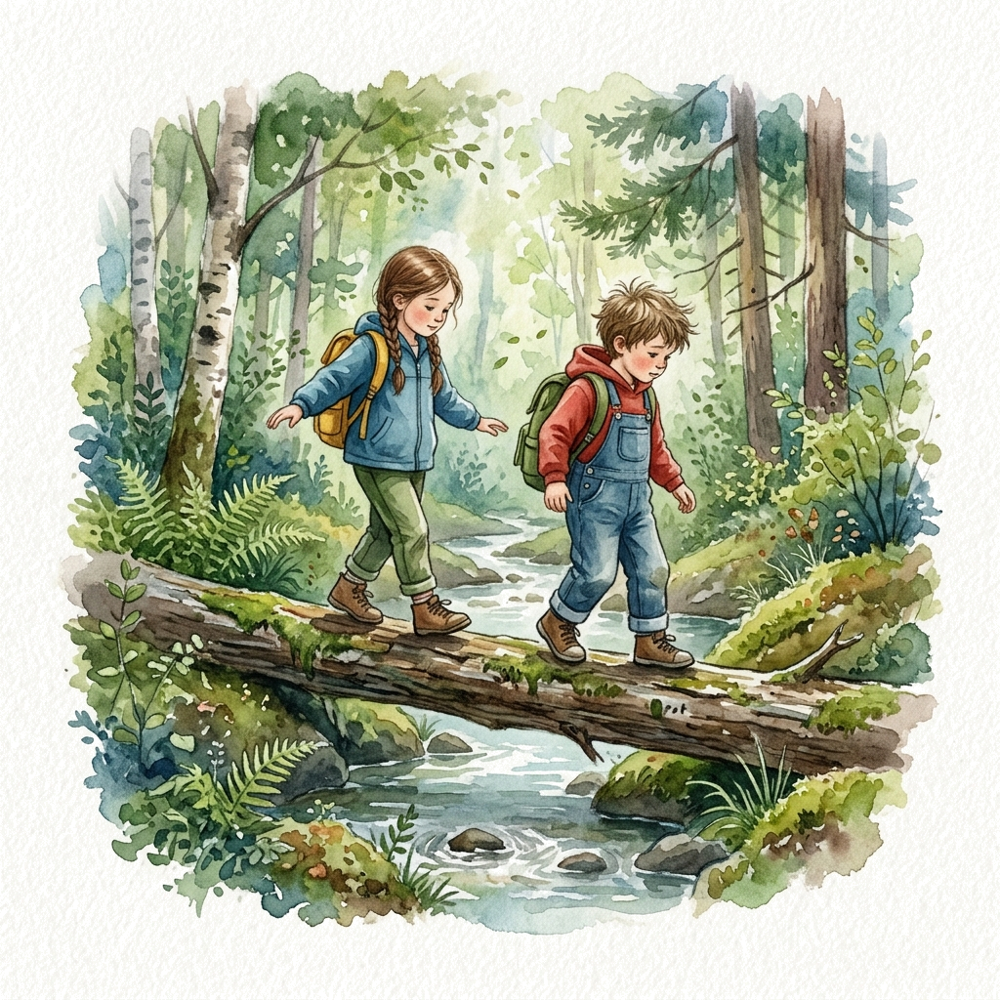
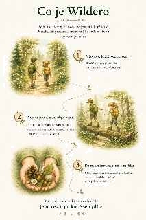
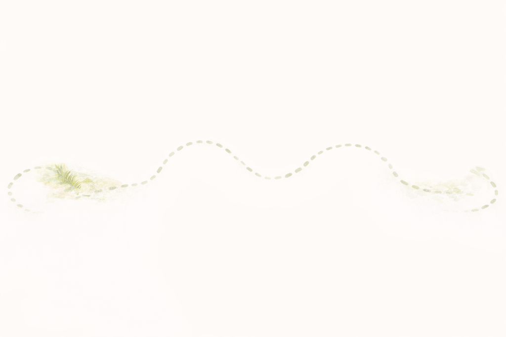
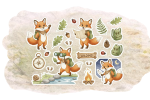
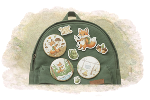
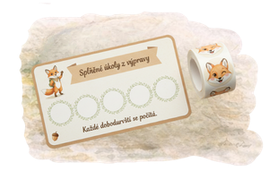

Co je Wildero
Wildero je jemný průvodce výpravami do přírody.
Pomáhá dát procházce směr, aniž by bralo svobodu objevovat po svém.
Výpravy, které vedou ven
Krátké výpravy tě zavedou do přírody za dobrodružstvím.

Prostor pro vlastní objevování
Není to hra, kterou je potřeba dohrát. Výprava nechává prostor všimnout si věcí, které by jinak zůstaly skryté.

Dobrodružství nekončí v mobilu
Někdy si z výpravy odnesete víc než zážitek – malou stopu dobrodružství, která pokračuje i doma.
Pro koho je Wildero
Pro každého, kdo chce jít ven — a najít v tom radost i smysl.
Pro rodiny s dětmi
Pro ty, kteří chtějí trávit čas spolu venku, ale ne vždy mají chuť vymýšlet program.
Wildero dá procházce směr — a dětem nechá prostor běhat, lézt i objevovat po svém.
Pro zvídavé i divoké děti
Pro děti, které si všimnou brouka v trávě i pro ty, které potřebují běžet k prvnímu
stromu.
Každé dítě si ve výpravě najde vlastní cestu.
Pro dospělé, kteří si chtějí provětrat hlavu
Pro chvíle, kdy chcete jít ven, mít cíl, ale žádný tlak.
Výprava může být tichá, klidná — jen pro vás.
Jak funguje Wildero
Jednoduše. Přirozeně. Venku.

1. Vyberete si výpravu
V aplikaci si vyberete výpravu podle chuti — krátkou nebo delší, klidnou nebo hravou.
Můžete začít okamžitě a kdekoliv – v lese za městem i v parku u domu.
Není potřeba dopředu nic chystat ani tisknout.
2. Vyrazíte ven
Telefon zůstává spíš v kapse.
Výprava vás vede do přírody — k pohybu, objevování i obyčejnému bytí venku.
3. Výprava pokračuje i po návratu
Některé výpravy nekončí návratem domů.
Děti si odnášejí nálepku, kartičku nebo odznak — drobnou připomínku zážitku, který byl
skutečný.
Odměny, které mají smysl
Nejde o výhru. Jde o vzpomínku.



Ve Wilderu nejsou odměny cílem. Jsou tichým zakončením výpravy.